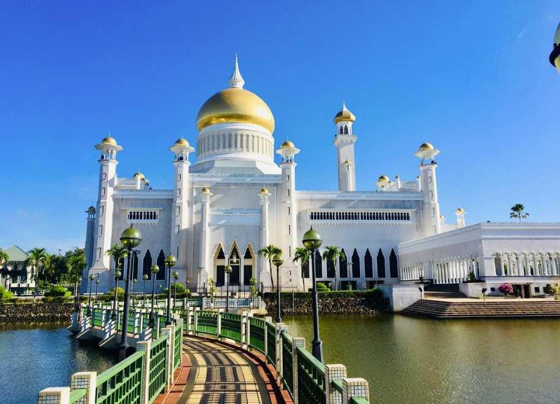
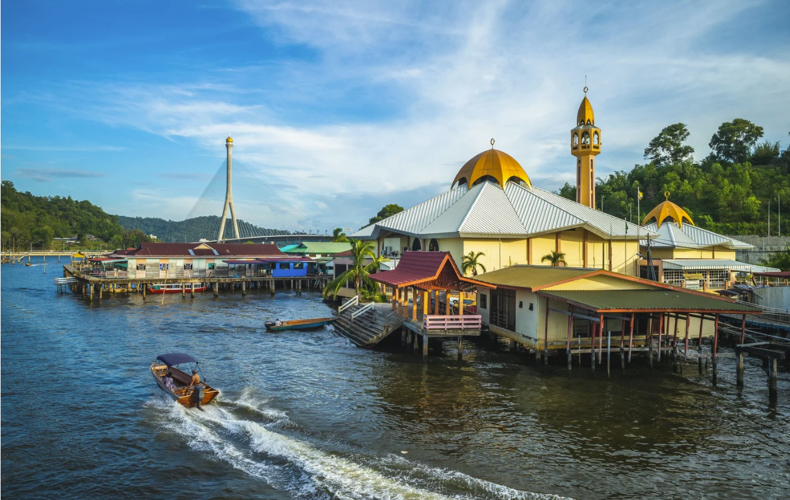
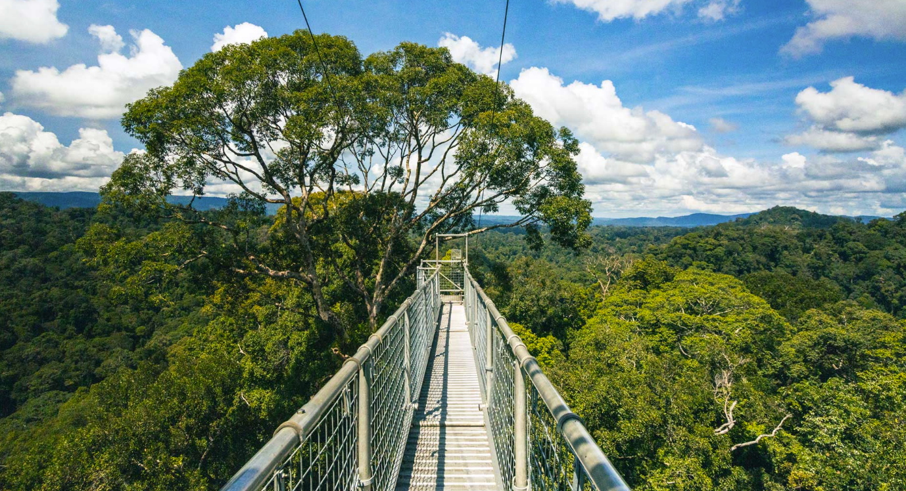
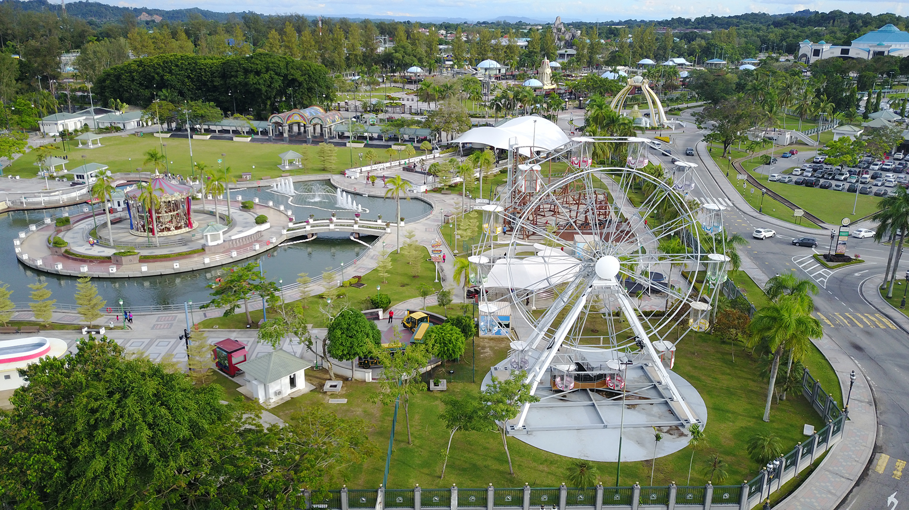
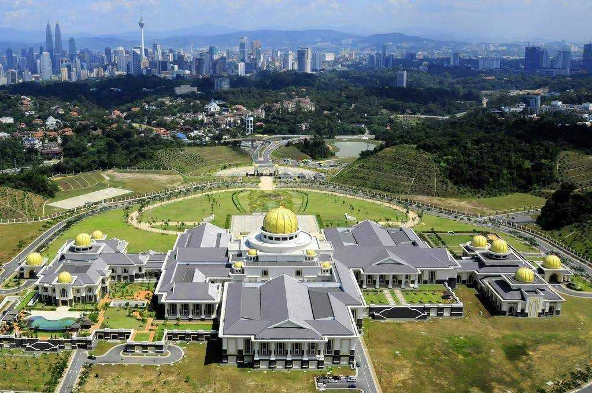

Discover Brunei
Popular Attractions and Destinations
Here are some of the must-visit places in Brunei.

Omar Ali Saifuddien Mosque
Omar Ali Saifuddien Mosque, an iconic symbol in Bandar Seri Begawan, epitomizes Brunei’s blend of traditional Islamic and contemporary architecture. Completed in 1958 and named after the 28th Sultan of Brunei, this architectural masterpiece features a stunning golden dome, Italian marble columns, and intricate stained glass windows, showcasing fine craftsmanship from around the world. The mosque sits gracefully by a tranquil lagoon with a replica 16th-century royal barge, symbolizing Brunei’s regal heritage and Islamic devotion. Surrounded by landscaped gardens, the mosque is a spiritual sanctuary and an essential stop for anyone visiting Brunei
Location: Bandar Seri Begawan
Kampong Ayer
Kampong Ayer is one of the largest water settlements in Southeast Asia, this expanse of settlements on stilts is a must-visit for any traveler wishing to complete their tour of Brunei. The Brunei River is home to a lively community. Start off with a scenic boat ride of the Brunei River before taking a walk along wooden paths and bridges rich with culture and history. Complete your experience by paying a visit to the Cultural and Tourism Gallery and learn why Kampong Ayer is known as the “Venice of The East”.
Location: Bandar Seri Begawan
Ulu Temburong National Park
Without a doubt, the crown jewel of Brunei’s green landscapes. You will only have truly visited Brunei if you have checked in at least once at this renowned national park. Located at the easternmost part of Brunei in the Temburong district, this sprawling 50,000-hectare expanse of undisturbed rainforests stretches over a majority of the southern district, and is considered one of the most diverse ecosystems in the world. Home to a wide range of lowland and mountain forests housing many unique species, this is also a realm belonging to Borneo’s longhouse communities and their ancient culture. Here, there are many experiences to savour – from watching gibbons forage along the river at daybreak to listening to the quiet, soothing sounds of the rainforest at dusk – this eye-to-eye encounter with nature is sure to stay with you long even after you’ve rekindled with civilization.
Location: Temburong
Jerudong Park
Brunei’s famous amusement park, and the largest in Borneo – Jerudong Park boasts beautifully landscaped playground with all kinds of amusement rides for all ages. With a kids waterpark and some adrenaline inducing activities, one can enjoy a whole day with the family out in one place. You can also find an outdoor food court to curb all your hunger pangs after an eventful day! Do make sure to check out the entrance fees and operating hours before heading there to avoid disappointment.
Location: Jerudong
Royal Regalia Museum
This museum houses the Sultan’s full royal regalia, as well as exhibits commemorating the Silver and Golden Jubilee celebrations of the present monarch’s reign. Visitors are greeted with the very same golden chariot used to bring the Sultan through the city streets during the Silver Jubilee celebration in 1992.
Location: Bandar Seri Begawan
Istana Nurul Iman
Istana Nurul Iman is famous for holding the Guinness World Record of being the largest palace and royal residence in the world’ (according to floor space). It is the residence of the Sultan of Brunei and his family. The name of the palace translates to ‘Palace of the Light and Faith’, Istana Nurul Imans is known for its exquisite architecture. The palace is also of political and diplomatic importance as it serves as the seat of the Government of Brunei.
Location: Bandar Seri BegawanLearn About Our Culture